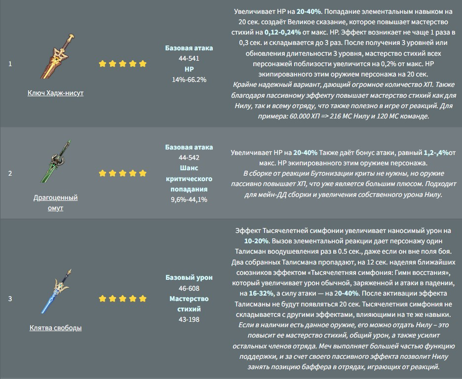
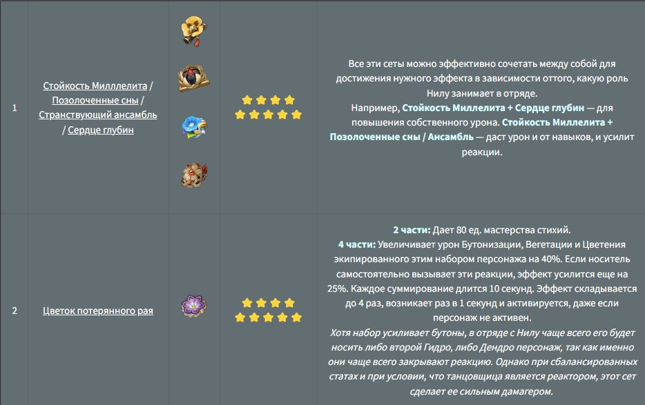

Нилу – танцовщица из Сумеру, мастерство движений которой способно отправить любого зрителя в сказочные миры. И даже после окончания выступления публика, вернувшись в реальность, разбредается восвояси словно опьяненная дурманом. Несмотря на всю эфемерность сценического образа, в повседневной жизни Нилу такая же наивная, жизнерадостная и улыбчивая подобно любой девушке ее возраста. Как игровой персонаж является Гидро мечницей редкости 5⭐.
Оружие Нилу подбирается в зависимости от ее роли в отряде, остальных союзников и реакций, через которые она играет. Например, в стандартной сборке через Бутонизацию важно HP/мастерство стихий. В альтернативных билдах через реакции первого порядка или для повышения собственного дамага также важны криты.
Артефакты на Нилу ставятся либо с упором на игру от реакций, либо на повышение собственного элементального урона. Подходящих полных комплектов не так много, но в ее случае вполне можно использовать 2+2 варианты, комбинируя сеты между собой.
